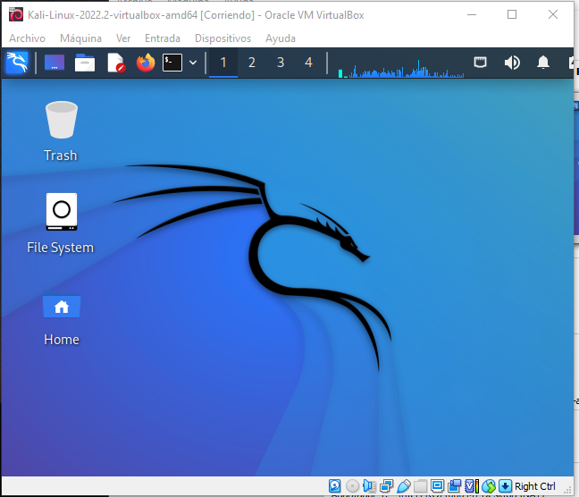
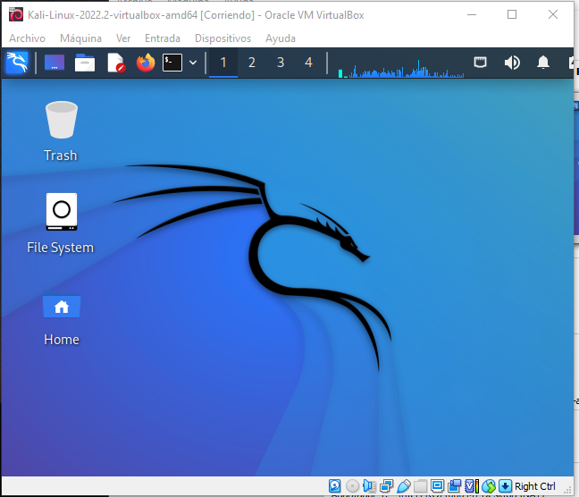
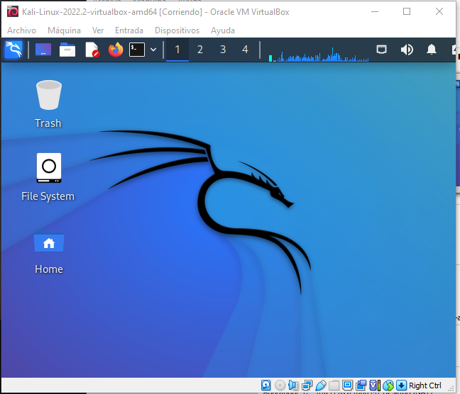

Acerca de mí.
Soy un estudiante de ingeniería en ciencias de la computación con diversos intereses relacionados a la programación y a la aplicación de la tecnología en dilemas sociales.
 

Soy un estudiante de ingeniería en ciencias de la computación con diversos intereses relacionados a la programación y a la aplicación de la tecnología en dilemas sociales.


A continuación puede observar un ranking que hice de las diferentes materias que he cursado en la carrer, siendo 1 significando bajo o poco y 10 alto o mucho dependiendo de la característica que se este evaluando.
| Materia | Complejidad | Tiempo dedicado | Conocimientos adquiridos |
| Prog. Sistemas | 9 | 8 | 8 |
| Diseño de software | 7 | 7 | 8 |
| Bases de datos | 8 | 8 | 9 |
| Estructuras de datos | 9 | 9 | 9 |
Suelo jugar basket en el coliseo de la espol
Estoy haciendo una recopilación de datos varios acerca de las personas que visitan mi página, con el objetivo de procesar dichos datos para tener información y estadísticas con las cuales practicar, contesta el siguiente formulario si gustas.